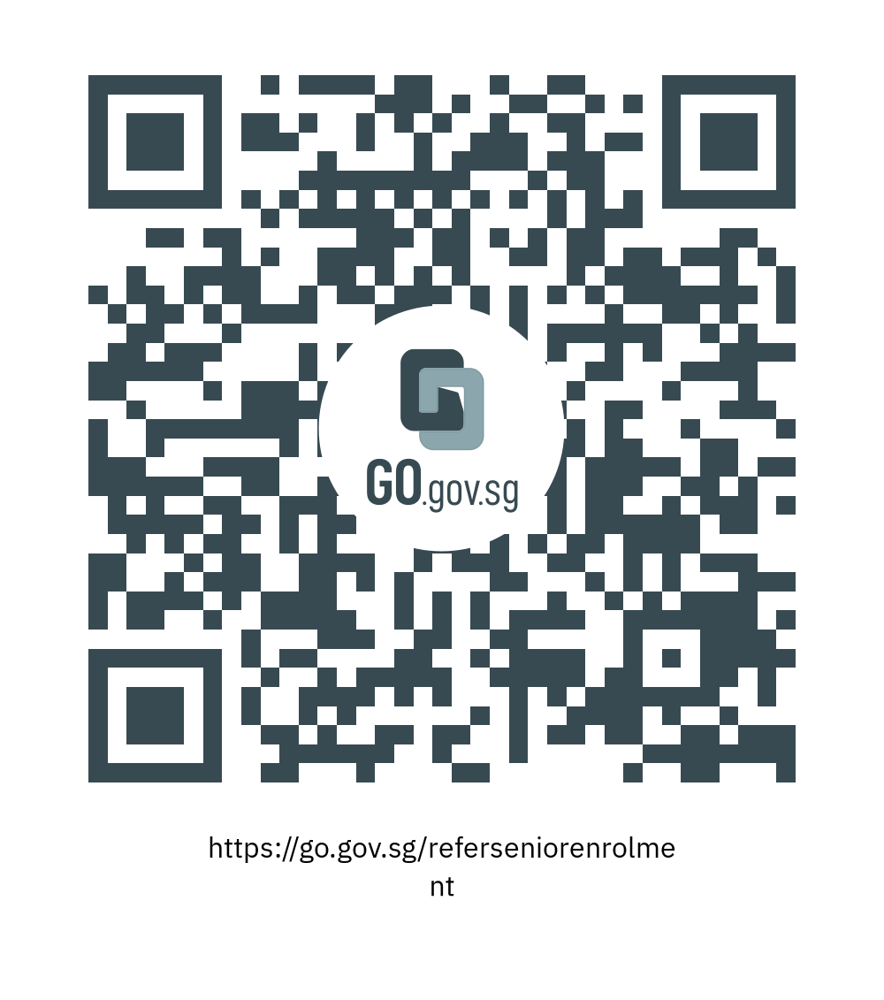

How It Works?
IT'S PRETTY SIMPLE
Scroll

STEP 1
PRE-REGISTER TO TAKE PART

If you know of any senior aged 60 years and over who has not received
their COVID-19 vaccination, encourage him/her to be vaccinated.
Pledge that you will support them in receiving their vaccination, through the
'Let's Get Our Seniors Vaccinated' programme, and complete this pre-registration
form.
A confirmation SMS will be sent to you in the next 1 to 2 days.
Please note that pre-registration for the ‘Let’s Get Our Seniors Vaccinated’
programme 1 to 2 days prior to the date senior receives the first dose of the
vaccine is compulsory. There will be no pre-registration on-site and HPB will not
be able to complete your registration at the Vaccination Centre without your
confirmation SMS.
Scroll
STEP 2
BRING SENIOR TO PARTICIPATING VACCINATION CENTRES
AND COMPLETE REGISTRATION FOR PROGRAMME
Share your personal vaccination experience and the importance and benefits of COVID-19
vaccination with the senior. Address the senior’s concerns and offer support to accompany
him/her to seek a doctor’s advice, if necessary.
Accompany the senior to receive their vaccination at selected Vaccination Centres
(refer to the list below) where HPB staff are stationed. Seniors may walk-in
to the Vaccination Centre to receive their first dose of vaccination,
without any prior appointment needed.
For the senior’s first vaccination appointment, you will be required to approach HPB
staff at the Vaccination Centre and show your confirmation SMS and Photo ID (NRIC / FIN)
to complete your registration for the ‘Let’s Get Our Seniors Vaccinated’ programme.
As part of the registration process, the senior will also be required to provide his/her
consent for the referral.
For a list of Vaccination Centres with the ‘Let’s Get Our Seniors Vaccinated’ Programme
List of Vaccination Centres
DO:
- Pre-register for the programme 1 to 2 days prior to the date of senior’s vaccination.
- Accompany seniors for his/her vaccination appointments and support them throughout the
process. Referrers will be required to accompany seniors for their first dose to complete
the registration process. Referrers who do not do so will not be eligible for the token
of appreciation
- Ensure senior’s vaccination is done at the selected Vaccination Centres offering this
programme (refer to the list on the right). You will not be eligible for this programme if
senior is vaccinated at other locations (e.g. Clinics, Polyclinics, Mobile Vaccination
Teams or Home Vaccination Teams).
- Check in with the senior after each dose to ensure that he/she is feeling
well post-vaccination.
Scroll

STEP 3
RECEIVE TOKEN OF APPRECIATION
ONCE SENIOR IS FULLY VACCINATED
As a token of appreciation, the referrer will receive $30 HPB eVouchers once HPB
verifies that the referrer and referred senior have met the eligibility criteria1.
The eVouchers will be credited into the referrer’s Healthy 365 account approximately 3
weeks after the senior completes 2 doses of the COVID-19 vaccination at selected
Vaccination Centres. You will receive a SMS to inform you once the eVouchers have been
credited into your Healthy 365 account. Click here to find out how to access your
Healthy 365 account and use your eVouchers.
To be eligible for the token of appreciation, the following criteria must be met
- Referrer and referred seniors are both eligible for the programme
(Refer to Question 3 in FAQ for more information).
- Referrer successfully pre-registered for the programme and received
the SMS confirmation prior to the date of senior’s 1st dose of vaccination.
- Referrer accompanied senior for his/her first vaccination dose at selected
Vaccination Centres and successfully completed the registration process on-ground.
- Referred senior received their first dose of vaccine no later than 30 November 2021.
- Seniors complete 2 doses of the COVID-19 vaccination at selected Vaccination Centres no
later than 25 January 2022, and HPB has verified that the senior has been fully vaccinated.
Scroll
THE WORLD IS A COLOURFUL PLACE
“When he was alive, he didn't travel much because he was also
a workaholic and he didn't have many friends to travel with,” he said,
adding that the family also seldom travelled.
Family of one of Singapore’s COVID-19 fatalities tells his story